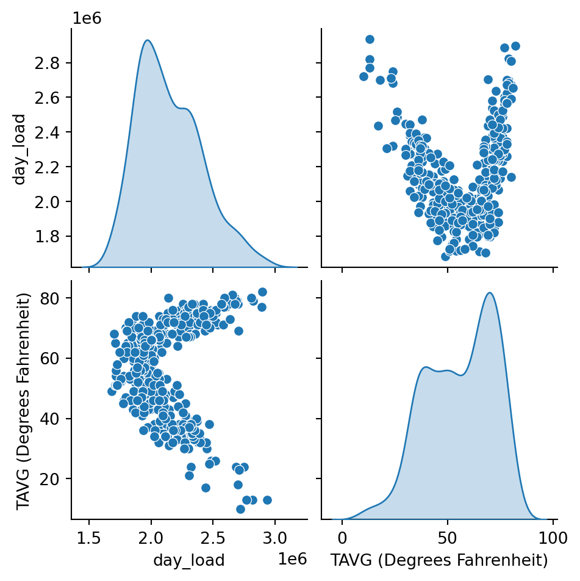
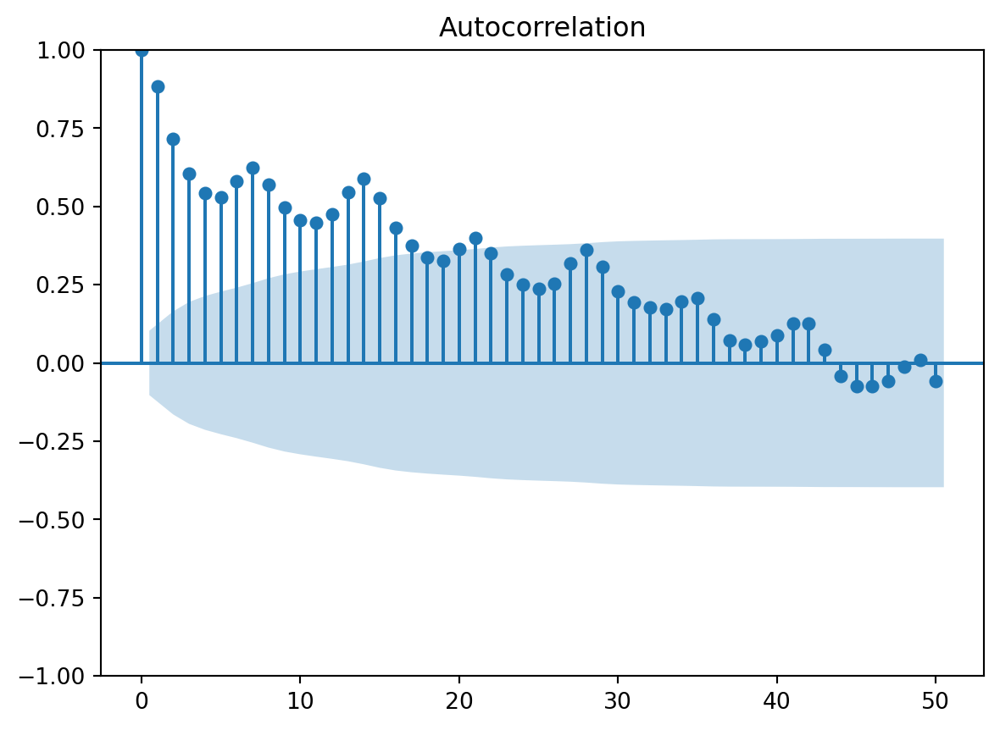
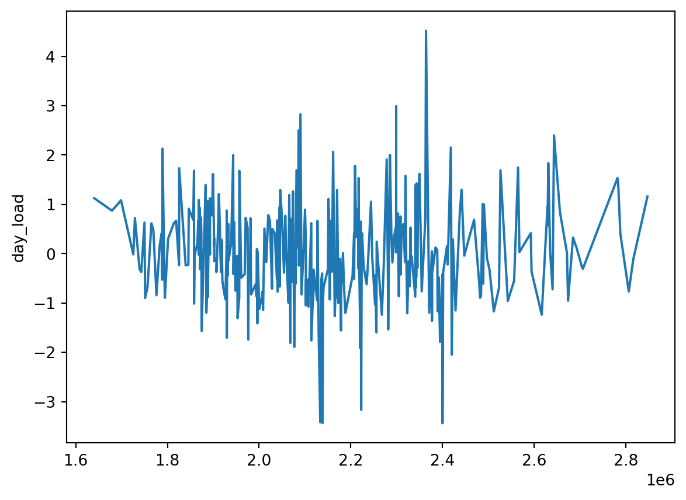

# loads the packages to be used
import numpy as np
import pandas as pd
import tensorflow as tf
import keras
import random
from sklearn.linear_model import LinearRegression
from sklearn.preprocessing import StandardScaler
from sklearn.ensemble import RandomForestRegressor
import statsmodels.api as sm
from scipy.stats import shapiro
import statistics
import os
from datetime import datetime
import seaborn as sb
from matplotlib import pyplot as plt
from statsmodels.graphics.tsaplots import plot_pacf, plot_acfLoad Forecast
Introduction
Hello world, this is just a simple comparison between the predictive methods for forecasting PJM load for the next day. In this we use the load data from PJM’s data finder as well as the weather forecast from John Glenn international airport via NOAA. Below are links to the data as well as the pulled data is in the git repo.
#Changes directory to the project directory and loads the data
os.chdir("C:\Projects\pjm_load_forecast")
cwd = os.getcwd()
#Filters weather to past year and sets to date to datetime
weather_data = pd.read_csv("data\johnglenn_weather.csv")
weather_data = weather_data[weather_data["Date"] >= "2023-05-01"]
weather_data['Date'] = pd.to_datetime(weather_data['Date'], format = "%Y-%m-%d")
#Filters the data to just PJM RTO and then gets daily values from hourly load
pjm_rto_load = pd.read_csv("data\hrl_load_prelim.csv")
pjm_rto_load['datetime_beginning_ept'] = pd.to_datetime(pjm_rto_load['datetime_beginning_ept'])
# Makes the datetime a date and hourly load numeric
pjm_rto_load['date'] = pjm_rto_load['datetime_beginning_ept'].dt.date
pjm_rto_load['date'] = pd.to_datetime(pjm_rto_load['date'])
pjm_rto_load['load_hourly'] = pd.to_numeric(pjm_rto_load['prelim_load_avg_hourly'])
#Gets the sum for load in a day across all regions and hours in the day
pjm_rto_load_day = pjm_rto_load[['date', 'load_hourly']].groupby('date').agg(day_load = ('load_hourly','sum')).reset_index()
#Joins datasets together
pjm_data = pjm_rto_load_day.merge(weather_data, left_on='date', right_on='Date')[['date', 'day_load', 'TAVG (Degrees Fahrenheit)']]
#Gets a season variable
pjm_data['month'] = pd.DatetimeIndex(pjm_data['date']).month
pjm_data['season'] = np.where(pjm_data['month'].isin([12,1,2]), "Winter", np.where(pjm_data['month'].isin([3,4,5]), "Spring", np.where(pjm_data['month'].isin([6,7,8]), "Summer","Fall")))
#Deletes the past data sets
del pjm_rto_load_day
del weather_data<>:2: SyntaxWarning: invalid escape sequence '\P'
<>:6: SyntaxWarning: invalid escape sequence '\j'
<>:11: SyntaxWarning: invalid escape sequence '\h'
<>:2: SyntaxWarning: invalid escape sequence '\P'
<>:6: SyntaxWarning: invalid escape sequence '\j'
<>:11: SyntaxWarning: invalid escape sequence '\h'
C:\Users\jkdav\AppData\Local\Temp\ipykernel_31572\1686998316.py:2: SyntaxWarning: invalid escape sequence '\P'
os.chdir("C:\Projects\pjm_load_forecast")
C:\Users\jkdav\AppData\Local\Temp\ipykernel_31572\1686998316.py:6: SyntaxWarning: invalid escape sequence '\j'
weather_data = pd.read_csv("data\johnglenn_weather.csv")
C:\Users\jkdav\AppData\Local\Temp\ipykernel_31572\1686998316.py:11: SyntaxWarning: invalid escape sequence '\h'
pjm_rto_load = pd.read_csv("data\hrl_load_prelim.csv")
C:\Users\jkdav\AppData\Local\Temp\ipykernel_31572\1686998316.py:12: UserWarning: Could not infer format, so each element will be parsed individually, falling back to `dateutil`. To ensure parsing is consistent and as-expected, please specify a format.
pjm_rto_load['datetime_beginning_ept'] = pd.to_datetime(pjm_rto_load['datetime_beginning_ept'])EDA
In the EDA we can see that there were no missing data. When looking at the desnisties of temperature and load we can see they are multi modal suggesting multiple populations. However when looking at the months we can see this is season driven. Furthermore when looking at the data we can see that temperature and load have a clear relationship between the two.
missing_vals = pjm_data['TAVG (Degrees Fahrenheit)'].isna().sum()
print("Number of NAs in Degrees of weather :", missing_vals)
sb.kdeplot(pjm_data['TAVG (Degrees Fahrenheit)'])
plt.show()
sb.kdeplot(data = pjm_data, x = 'TAVG (Degrees Fahrenheit)', hue="season")
plt.show()
sb.lineplot(data=pjm_data, x="date", y='TAVG (Degrees Fahrenheit)')
missing_vals = pjm_data['day_load'].isna().sum()
print("Number of NAs in Day Load :", missing_vals)
sb.kdeplot(pjm_data['day_load'])
plt.show()
sb.kdeplot(data = pjm_data, x = 'day_load', hue="season")
plt.show()
sb.lineplot(data=pjm_data, x="date", y='day_load')
plt.show()
sb.pairplot(pjm_data.drop(columns = ['month']), diag_kind='kde')
plt.show()Number of NAs in Degrees of weather : 0
Number of NAs in Day Load : 0ValueError: Date ordinal 3329349.1745320703 converts to 11085-06-13T04:11:19.570880 (using epoch 1970-01-01T00:00:00), but Matplotlib dates must be between year 0001 and 9999.<Figure size 672x480 with 1 Axes>
Time Series
For the first model we look at making an model based on time. First we have to look time element with ACF and PACF to see what ARMIA elements we have. Because we are only using one year, we won’t be doing any seasonilty or monthly differenceing.
When looking at at the ACF and PACF we see that the PACF has the first two lags have a strong relationship, while the ACF has a gradual decline. With this we will consider the first two lags or AR(2) variables.
Additionally we create new variables heating degree days and cooling degree days. These variables are ways to help determine the when a day would be used for heating or cooling based upon the temperature. As well as getting weekend dates as load will changes then typical work week days.
Lastly we create the test set, in which as we are trying to forecast the next day, we use the last 7 days of each season to create the test set.
#Look at autocorrelations
plot_acf(pjm_data['day_load'], lags=50)
plot_pacf(pjm_data['day_load'], lags=50)
#Gets the lag values
pjm_data['day_load_lag1'] = pjm_data['day_load'].shift(1)
pjm_data['day_load_lag2'] = pjm_data['day_load'].shift(2)
#Gets the temperature based values
pjm_data['degree'] = pjm_data['TAVG (Degrees Fahrenheit)']
pjm_data['degree_cdd'] = np.where(pjm_data['TAVG (Degrees Fahrenheit)'] - 70 > 0, pjm_data['TAVG (Degrees Fahrenheit)'] - 70, 0)
pjm_data['degree_hdd'] = np.where(60 - pjm_data['TAVG (Degrees Fahrenheit)'] > 0, 60 - pjm_data['TAVG (Degrees Fahrenheit)'], 0)
#Get the weekend dates
pjm_data['weekday'] = pjm_data['date'].dt.dayofweek
pjm_data['weekend'] = np.where(pjm_data['weekday'].isin([5,6]), True, False)
#Drop unneeded fields
pjm_data = pjm_data.drop(columns=['TAVG (Degrees Fahrenheit)', 'month', 'weekday'])
#Gets test and train
pjm_data_test = pjm_data.groupby('season').tail(7)
pjm_data_train = pjm_data.drop(pjm_data.groupby('season').tail(7).index)
pjm_data_train = pjm_data_train[pjm_data_train['day_load_lag2'].notna()]
When looking at the model results, we see that the model does extremely well. Additionally when looking at the diagnostic plots it fits our assumptions for multiple linear regression as well as making sure it is not a random walk. When looking at the model results, we drop both cooling degree days and the second lag as they don’t help the explanation as much.
#TS Model
test_x = pjm_data_test.drop(columns=['date','day_load','season'])
test_y = pjm_data_test['day_load']
x = pjm_data_train.drop(columns=['date','day_load','season'])
y = pjm_data_train['day_load']
#Creates the model and fits it
model = LinearRegression()
model.fit(x, y)
#Gets
load_hat_ts = model.predict(x)
residuals_ts = pjm_data_train['day_load'] - load_hat_ts
#Looks at diagnostic plots
residuals_ts_std = (residuals_ts - residuals_ts.mean())/statistics.stdev(residuals_ts)
sm.qqplot(residuals_ts_std)
shapiro(residuals_ts)
sb.lineplot(x=pjm_data["date"], y=residuals_ts_std)
plt.show()
sb.lineplot(x=load_hat_ts, y=residuals_ts_std)
plt.show()
#Look at model summary
x2 = sm.add_constant(x)
est = sm.OLS(y, x2.astype(float))
print(est.fit().summary())
#Look at model summary dropping lag
x2 = x2.drop(columns=['day_load_lag2'])
est = sm.OLS(y, x2.astype(float))
print(est.fit().summary())
#Look at model summary cooling degree day
x2 = x2.drop(columns=['degree_cdd'])
est = sm.OLS(y, x2.astype(float))
print(est.fit().summary())
#Make test MSE
ts_mse = np.square(y - est.fit().predict(x2)).mean()
test_x2 = sm.add_constant(test_x.drop(columns=['degree_cdd','day_load_lag2']))
ts_mse_test = np.square(test_y - est.fit().predict(test_x2)).mean() 
OLS Regression Results
==============================================================================
Dep. Variable: day_load R-squared: 0.917
Model: OLS Adj. R-squared: 0.916
Method: Least Squares F-statistic: 601.7
Date: Sun, 02 Jun 2024 Prob (F-statistic): 5.17e-173
Time: 18:35:59 Log-Likelihood: -4211.9
No. Observations: 333 AIC: 8438.
Df Residuals: 326 BIC: 8465.
Df Model: 6
Covariance Type: nonrobust
=================================================================================
coef std err t P>|t| [0.025 0.975]
---------------------------------------------------------------------------------
const -2.702e+05 1.02e+05 -2.648 0.008 -4.71e+05 -6.94e+04
day_load_lag1 0.5595 0.045 12.401 0.000 0.471 0.648
day_load_lag2 0.0142 0.039 0.362 0.718 -0.063 0.091
degree 1.741e+04 1697.919 10.252 0.000 1.41e+04 2.07e+04
degree_cdd 7712.2874 3417.358 2.257 0.025 989.430 1.44e+04
degree_hdd 2.713e+04 2167.954 12.515 0.000 2.29e+04 3.14e+04
weekend -1.413e+05 1.06e+04 -13.365 0.000 -1.62e+05 -1.21e+05
==============================================================================
Omnibus: 19.197 Durbin-Watson: 1.374
Prob(Omnibus): 0.000 Jarque-Bera (JB): 50.581
Skew: 0.165 Prob(JB): 1.04e-11
Kurtosis: 4.881 Cond. No. 7.48e+07
==============================================================================
Notes:
[1] Standard Errors assume that the covariance matrix of the errors is correctly specified.
[2] The condition number is large, 7.48e+07. This might indicate that there are
strong multicollinearity or other numerical problems.
OLS Regression Results
==============================================================================
Dep. Variable: day_load R-squared: 0.917
Model: OLS Adj. R-squared: 0.916
Method: Least Squares F-statistic: 723.9
Date: Sun, 02 Jun 2024 Prob (F-statistic): 1.95e-174
Time: 18:35:59 Log-Likelihood: -4212.0
No. Observations: 333 AIC: 8436.
Df Residuals: 327 BIC: 8459.
Df Model: 5
Covariance Type: nonrobust
=================================================================================
coef std err t P>|t| [0.025 0.975]
---------------------------------------------------------------------------------
const -2.677e+05 1.02e+05 -2.633 0.009 -4.68e+05 -6.77e+04
day_load_lag1 0.5736 0.022 25.550 0.000 0.529 0.618
degree 1.737e+04 1692.445 10.263 0.000 1.4e+04 2.07e+04
degree_cdd 7612.9902 3401.801 2.238 0.026 920.815 1.43e+04
degree_hdd 2.706e+04 2154.985 12.555 0.000 2.28e+04 3.13e+04
weekend -1.396e+05 9363.884 -14.904 0.000 -1.58e+05 -1.21e+05
==============================================================================
Omnibus: 19.069 Durbin-Watson: 1.387
Prob(Omnibus): 0.000 Jarque-Bera (JB): 49.689
Skew: 0.168 Prob(JB): 1.62e-11
Kurtosis: 4.862 Cond. No. 5.28e+07
==============================================================================
Notes:
[1] Standard Errors assume that the covariance matrix of the errors is correctly specified.
[2] The condition number is large, 5.28e+07. This might indicate that there are
strong multicollinearity or other numerical problems.
OLS Regression Results
==============================================================================
Dep. Variable: day_load R-squared: 0.916
Model: OLS Adj. R-squared: 0.915
Method: Least Squares F-statistic: 892.8
Date: Sun, 02 Jun 2024 Prob (F-statistic): 7.34e-175
Time: 18:35:59 Log-Likelihood: -4214.5
No. Observations: 333 AIC: 8439.
Df Residuals: 328 BIC: 8458.
Df Model: 4
Covariance Type: nonrobust
=================================================================================
coef std err t P>|t| [0.025 0.975]
---------------------------------------------------------------------------------
const -4.565e+05 5.71e+04 -7.989 0.000 -5.69e+05 -3.44e+05
day_load_lag1 0.5787 0.022 25.751 0.000 0.534 0.623
degree 2.02e+04 1132.910 17.828 0.000 1.8e+04 2.24e+04
degree_hdd 3.022e+04 1637.917 18.448 0.000 2.7e+04 3.34e+04
weekend -1.387e+05 9413.802 -14.738 0.000 -1.57e+05 -1.2e+05
==============================================================================
Omnibus: 14.482 Durbin-Watson: 1.385
Prob(Omnibus): 0.001 Jarque-Bera (JB): 31.802
Skew: 0.132 Prob(JB): 1.24e-07
Kurtosis: 4.491 Cond. No. 2.95e+07
==============================================================================
Notes:
[1] Standard Errors assume that the covariance matrix of the errors is correctly specified.
[2] The condition number is large, 2.95e+07. This might indicate that there are
strong multicollinearity or other numerical problems.Random Forest
The next model we consider is random forest. In this we use all the same base variabels from before and then consider a max depth of 15 splits and square root of the number of paramters to be considered at each split. When computing we use 200 trees in order to bag the results.
model = RandomForestRegressor(n_estimators=200, max_depth=15, max_features='sqrt')
model.fit(x, y)
load_hat_rf = model.predict(x)
residuals_rf = pjm_data_train['day_load'] - load_hat_rf
rf_mse = np.square(residuals_rf).mean()
#Gets the test MSE
residuals_rf_test = pjm_data_test['day_load'] - model.predict(test_x)
rf_mse_test = np.square(residuals_rf_test).mean()Neural Network
Lastly we consider a neural network. In this we use all the same base variabels from before and then consider a neural network with sequential model with 2 hidden layers each being 3 dense. When computing we use 10 epochs in order to come up with the results.
#Neural network
# Define Sequential model with 2 hidden layers each being 3 dense.
scaler = StandardScaler()
x3 = x2.drop(columns = ['const'])
x3 = scaler.fit_transform(x)
x3 = np.array(x3)
y2 = np.array([y]).transpose()
model = keras.Sequential()
model.add(keras.layers.Dense(3, activation = 'relu', input_dim=6))
model.add(keras.layers.Dense(3, activation = 'relu'))
model.add(keras.layers.Dense(1))
model.compile(loss="mean_squared_error", optimizer="sgd")
# This builds the model for the first time:
model.fit(x3, y2, epochs=10)
load_hat_nn = model.predict(x3)
residuals_nn = y2 - load_hat_nn
nn_mse = np.square(residuals_rf).mean()
#Test MSE
residuals_nn_test = np.array([pjm_data_test['day_load']]).transpose() - model.predict(test_x)
nn_mse_test = np.square(residuals_rf_test).mean()C:\Users\jkdav\AppData\Roaming\Python\Python312\site-packages\keras\src\layers\core\dense.py:87: UserWarning: Do not pass an `input_shape`/`input_dim` argument to a layer. When using Sequential models, prefer using an `Input(shape)` object as the first layer in the model instead.
super().__init__(activity_regularizer=activity_regularizer, **kwargs)Epoch 1/10
1/11 ━━━━━━━━━━━━━━━━━━━━ 26s 3s/step - loss: 4365572636672.0000 4/11 ━━━━━━━━━━━━━━━━━━━━ 0s 17ms/step - loss: 1257294623727776377602048.000011/11 ━━━━━━━━━━━━━━━━━━━━ 3s 9ms/step - loss: 821106083894977988919296.0000
Epoch 2/10
1/11 ━━━━━━━━━━━━━━━━━━━━ 2s 224ms/step - loss: 944465218242097446912.0000 9/11 ━━━━━━━━━━━━━━━━━━━━ 0s 7ms/step - loss: 874071000579041132544.0000 11/11 ━━━━━━━━━━━━━━━━━━━━ 0s 9ms/step - loss: 852686994754611707904.0000
Epoch 3/10
1/11 ━━━━━━━━━━━━━━━━━━━━ 1s 166ms/step - loss: 605563716782933409792.000011/11 ━━━━━━━━━━━━━━━━━━━━ 0s 3ms/step - loss: 546717467436268912640.0000
Epoch 4/10
1/11 ━━━━━━━━━━━━━━━━━━━━ 0s 88ms/step - loss: 388267779143329906688.000011/11 ━━━━━━━━━━━━━━━━━━━━ 0s 3ms/step - loss: 350539576952475353088.0000
Epoch 5/10
1/11 ━━━━━━━━━━━━━━━━━━━━ 0s 69ms/step - loss: 248947165452019171328.000011/11 ━━━━━━━━━━━━━━━━━━━━ 0s 2ms/step - loss: 224755693025505574912.0000
Epoch 6/10
1/11 ━━━━━━━━━━━━━━━━━━━━ 0s 66ms/step - loss: 159617879815032406016.000011/11 ━━━━━━━━━━━━━━━━━━━━ 0s 2ms/step - loss: 144107095670275440640.0000
Epoch 7/10
1/11 ━━━━━━━━━━━━━━━━━━━━ 0s 82ms/step - loss: 102344204774971277312.000011/11 ━━━━━━━━━━━━━━━━━━━━ 0s 2ms/step - loss: 92397398067505004544.0000
Epoch 8/10
1/11 ━━━━━━━━━━━━━━━━━━━━ 0s 67ms/step - loss: 65617807210602037248.000011/11 ━━━━━━━━━━━━━━━━━━━━ 0s 2ms/step - loss: 59242130707268501504.0000
Epoch 9/10
1/11 ━━━━━━━━━━━━━━━━━━━━ 0s 97ms/step - loss: 42072284671267307520.000011/11 ━━━━━━━━━━━━━━━━━━━━ 0s 3ms/step - loss: 37984362011847294976.0000
Epoch 10/10
1/11 ━━━━━━━━━━━━━━━━━━━━ 0s 83ms/step - loss: 26976150550600482816.000011/11 ━━━━━━━━━━━━━━━━━━━━ 0s 4ms/step - loss: 24354510209703477248.0000
1/11 ━━━━━━━━━━━━━━━━━━━━ 1s 128ms/step11/11 ━━━━━━━━━━━━━━━━━━━━ 0s 9ms/step 11/11 ━━━━━━━━━━━━━━━━━━━━ 0s 9ms/step
1/1 ━━━━━━━━━━━━━━━━━━━━ 0s 45ms/step1/1 ━━━━━━━━━━━━━━━━━━━━ 0s 46ms/stepResults based on MSE for the train and test data
Here we look at the results for models. As we can see the lowest train MSE is tied for the random forest and neural network while the time series is last; However, the time series performs best with the test set when compared to the other models. Because of this we can assume that the we overfit with the neural network and the random forest.
d = {'Model Type': ['Time Series Model', 'Random Forest', 'Neural Network'],'Train MSE': [ts_mse, rf_mse, nn_mse], 'Test MSE': [ts_mse_test, rf_mse_test, nn_mse_test]}
df = pd.DataFrame(data=d)
print(df) Model Type Train MSE Test MSE
0 Time Series Model 5.762981e+09 3.743318e+09
1 Random Forest 1.101380e+09 5.120390e+09
2 Neural Network 1.101380e+09 5.120390e+09Next Steps
So this is just an intro and the plan is to keep the project going. For next steps, I will be optimizing the hyperparameters for random forest and neural network. After that is to extend the forecating of load and compare it to the PJM’s predictions.